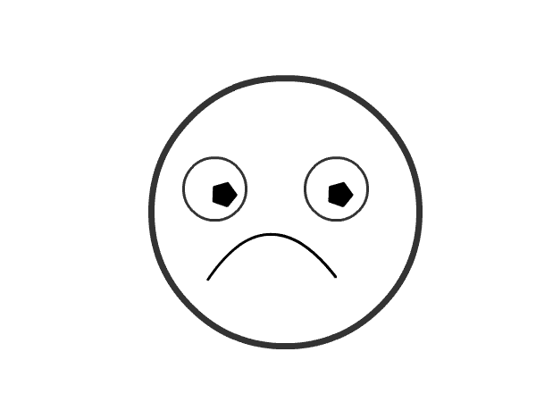
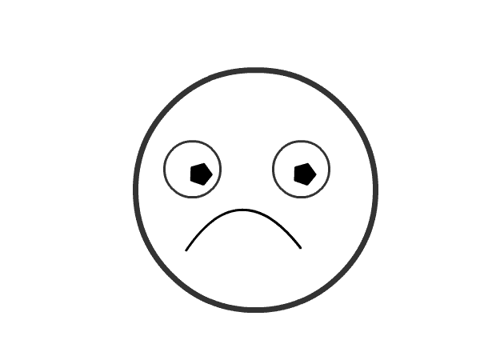

Animations
Animation is a method in which pictures are manipulated to appear as moving images. Today, most animations are made with computer-generated imagery (CGI). Computer animation can be very detailed 3D animation, while 2D computer animation can be used for stylistic reasons, low bandwidth or faster real-time renderings. Other common animation methods apply a stop motion technique to two and three-dimensional objects like paper cutouts, puppets or clay figures.
Vector Based Animations
Vector animation is a term used to refer to animation in which the art or motion is controlled by vectors rather than pixels. Vector animation often allows cleaner, smoother animation because images are displayed and resized using mathematical values instead of stored pixel values.
Cel Based Animations
Cel animations are created by placing similar frames in sequential order. Generally cell animations create movement by showing 24 frames per second. It's common to draw a frame by placing a blank sheet (cell) over the previous frame; this is done to create a smoother movement in between frames.
 

Rotoscoping
Rotoscoping is a technique patented by Max Fleischer in 1917 where animators trace live-action movement, frame by frame. The source film can be directly copied from actors' outlines into animated drawings.
Live-action/animation
Live-action/animation is a technique combining hand-drawn characters into live action shots or live action actors into animated shots. One of the earlier uses was in Koko the Clown when Koko was drawn over live action footage.
Stop motion animation
Stop-motion animation is used to describe animation created by physically manipulating real-world objects and photographing them one frame of film at a time to create the illusion of movement. There are many different types of stop-motion animation, usually named after the medium used to create the animation. Computer software is widely available to create this type of animation; traditional stop motion animation is usually less expensive but more time-consuming to produce than current computer animation.
3D animation
3D animation is digitally modeled and manipulated by an animator. The animator usually starts by creating a 3D polygon mesh to manipulate. A mesh typically includes many vertices that are connected by edges and faces, which give the visual appearance of form to a 3D object or 3D environment. Sometimes, the mesh is given an internal digital skeletal structure called an armature that can be used to control the mesh by weighting the vertices. This process is called rigging and can be used in conjunction with keyframes to create movement.